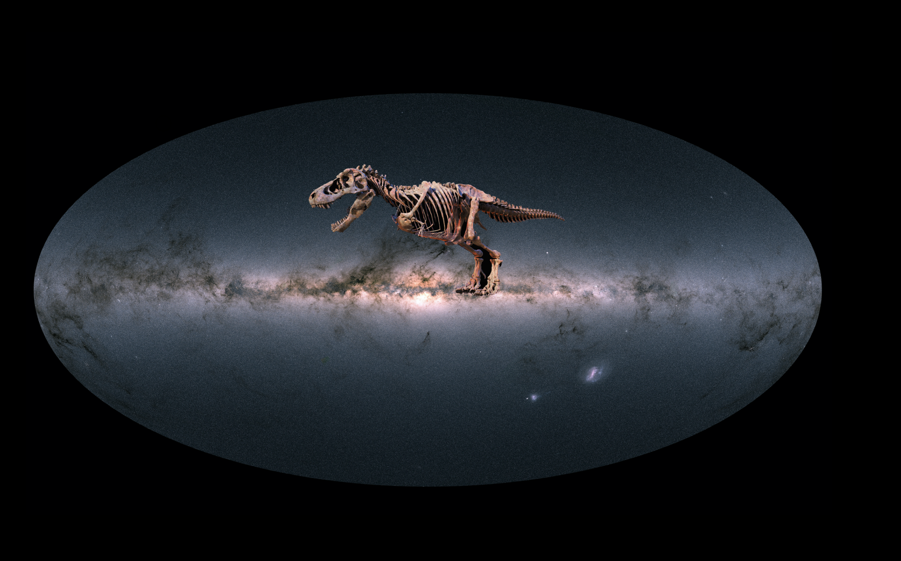

UCN Nucleus in Galactic Archaeology

Director: José G. Fernández-Trincado (Associate Professor) / Universidad Catolica del Norte
Principal Researchers: Dr. Christian Moni Bidin (Associate Professor) and Dr. Francesco Mauro (Professor) / Universidad Catolica del Norte
Affiliations
1. Universidad Católica del Norte, Av. Angamos 0610, Antofagasta, Chile
Acknowledgements
We gratefully acknowledges the grants support provided by ANID Fondecyt Iniciación No. 11220340, ANID Fondecyt Postdoc No. 3230001 and CAS-ANID/CAS220009 (Sponsoring researcher in both), from the Joint Committee ESO-Government of Chile under the agreement 2021 ORP 023/2021 and 2023 ORP 062/2023.
Contact
Please let me know if you have any questions or suggestions: jose.fernandez@ucn.cl
______________________________________________________________________________________________Page maintained by J. G. Fernández-Trincado
Last Update: 2025 July 18